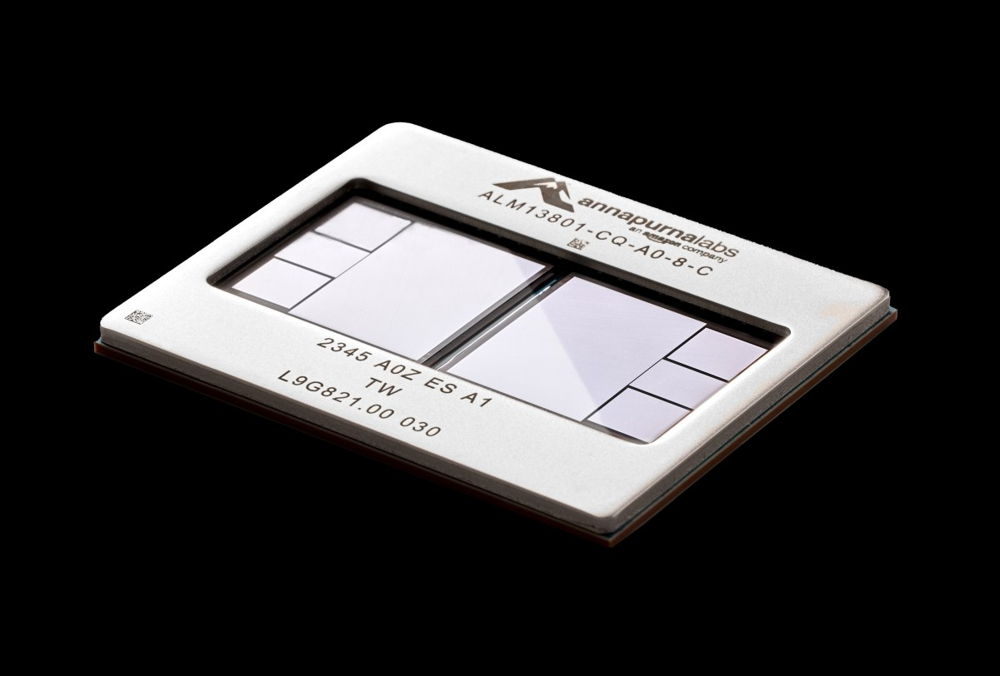

<section style="background-color: #f2f3f7; padding: 28px 10px; font-family: -apple-system, BlinkMacSystemFont, 'Segoe UI', Roboto, 'Helvetica Neue', Arial, sans-serif; line-height: 1.7; color: #3a3f4a;"><section style="max-width: 680px; margin: 0 auto; padding: 0;"><section style="margin-bottom: 20px; border-radius: 8px; overflow: hidden;"></section><section style="text-align: center; margin-bottom: 28px; padding: 28px 20px 24px 20px;"><p style="display: inline-block; font-size: 11px; color: #3a7abf; letter-spacing: 3px; font-weight: 600; margin: 0 0 10px 0; padding: 3px 14px; border: 1px solid #c0d5ea; border-radius: 20px; background-color: #edf2f8;">AI DAILY</p><h1 style="font-size: 22px; color: #1a1e28; margin: 0 0 6px 0; font-weight: 600;">AI 行业日报</h1><p style="font-size: 12px; color: #9aa0ae; margin: 0;">2026年4月8日 · 精选 8 条</p></section><section style="margin-bottom: 18px; border-radius: 10px; overflow: hidden; background-color: #ffffff; border: 1px solid #e0e3ea; border-top: 3px solid #3a7abf;"><section style="padding: 20px 22px 16px 22px;"><p style="margin: 0 0 8px 0;"><span style="font-size: 22px; font-weight: 700; color: #3a7abf; letter-spacing: 1px;">01</span><span style="display: inline-block; font-size: 11px; color: #3a7abf; background-color: #edf2f8; padding: 2px 8px; border-radius: 3px; margin-left: 10px; vertical-align: top; margin-top: 5px;">网络安全</span></p><h3 style="margin: 0 0 16px 0; color: #1a1e28; font-size: 17px; font-weight: 600; line-height: 1.4;">Anthropic发布Claude Mythos，拉苹果微软组安全联盟</h3></section><section style="padding: 0 22px 4px 22px;"></section><section style="padding: 16px 22px;"><section style="border-left: 3px solid #3a7abf; padding-left: 14px; margin-bottom: 10px;"><p style="margin: 0; line-height: 1.75; color: #4a5060; font-size: 14px;">4月7日，<strong>Anthropic</strong> 发布 <strong>Claude Mythos Preview</strong>，并启动 <strong>Project Glasswing</strong>。这版模型不公开销售，只给约 <strong>12家</strong> 核心伙伴先做防御性安全测试。</p></section><section style="border-left: 3px solid #c8d5e5; padding-left: 14px;"><p style="margin: 0; line-height: 1.75; color: #4a5060; font-size: 14px;">TechCrunch 与 CrowdStrike 的口径一致：参与方包括 <strong>Apple、Microsoft、AWS、Broadcom</strong> 等；Anthropic 还称，模型近几周找到 <strong>数千个零日漏洞</strong>，很多问题已躺了十几年。</p></section></section><section style="padding: 14px 20px 16px 20px; margin: 0 22px 18px 22px; background-color: #eef3f9; border-radius: 8px;"><p style="margin: 0 0 3px 0; font-size: 10px; color: #3a7abf; font-weight: 600; letter-spacing: 2px;">INSIGHT</p><p style="margin: 0; font-size: 13px; line-height: 1.75; color: #4a5a70;">这事最值钱的，不是又多一个模型名，而是大厂开始把前沿模型关进封闭测试场。模型越能写代码，最先抢着用它的部门，反而越像安全团队。</p></section></section><section style="margin-bottom: 18px; border-radius: 10px; overflow: hidden; background-color: #ffffff; border: 1px solid #e0e3ea; border-top: 3px solid #3a7abf;"><section style="padding: 20px 22px 16px 22px;"><p style="margin: 0 0 8px 0;"><span style="font-size: 22px; font-weight: 700; color: #3a7abf; letter-spacing: 1px;">02</span><span style="display: inline-block; font-size: 11px; color: #3a7abf; background-color: #edf2f8; padding: 2px 8px; border-radius: 3px; margin-left: 10px; vertical-align: top; margin-top: 5px;">智能汽车</span></p><h3 style="margin: 0 0 16px 0; color: #1a1e28; font-size: 17px; font-weight: 600; line-height: 1.4;">豆包最新版首发别克至境E7，车机开始「理解人」</h3></section><section style="padding: 0 22px 4px 22px;"></section><section style="padding: 16px 22px;"><section style="border-left: 3px solid #3a7abf; padding-left: 14px; margin-bottom: 10px;"><p style="margin: 0; line-height: 1.75; color: #4a5060; font-size: 14px;">别克宣布 <strong>至境E7</strong> 行业首发搭载 <strong>豆包大模型最新版</strong>，并将在 <strong>4月10日</strong> 开启预售。雷峰网和新浪汽车都提到，这次合作由上汽通用联手火山引擎推进。</p></section><section style="border-left: 3px solid #c8d5e5; padding-left: 14px;"><p style="margin: 0; line-height: 1.75; color: #4a5060; font-size: 14px;">新座舱主打三项「类人能力」：复杂指令协同、<strong>20+情绪表达</strong>、端云实时升级。用户一句「今天有点累」，系统会先判断情绪，再联动音乐和车控。</p></section></section><section style="padding: 14px 20px 16px 20px; margin: 0 22px 18px 22px; background-color: #eef3f9; border-radius: 8px;"><p style="margin: 0 0 3px 0; font-size: 10px; color: #3a7abf; font-weight: 600; letter-spacing: 2px;">INSIGHT</p><p style="margin: 0; font-size: 13px; line-height: 1.75; color: #4a5a70;">车厂现在争的，不是再多几个功能，而是谁先把语音从按钮替代品做成连续对话。别克这次先把理解层补上了，座舱体验的分水岭也更清楚了。</p></section></section><section style="margin-bottom: 18px; border-radius: 10px; overflow: hidden; background-color: #ffffff; border: 1px solid #e0e3ea; border-top: 3px solid #3a7abf;"><section style="padding: 20px 22px;"><p style="margin: 0 0 8px 0;"><span style="font-size: 22px; font-weight: 700; color: #3a7abf; letter-spacing: 1px;">03</span><span style="display: inline-block; font-size: 11px; color: #3a7abf; background-color: #edf2f8; padding: 2px 8px; border-radius: 3px; margin-left: 10px; vertical-align: top; margin-top: 5px;">大模型</span></p><h3 style="margin: 0 0 16px 0; color: #1a1e28; font-size: 17px; font-weight: 600; line-height: 1.4;">阿里千问3.6-Plus登顶OpenRouter周榜</h3></section><section style="padding: 16px 22px;"><section style="border-left: 3px solid #3a7abf; padding-left: 14px; margin-bottom: 10px;"><p style="margin: 0; line-height: 1.75; color: #4a5060; font-size: 14px;"><strong>Qwen3.6-Plus</strong> 连续 <strong>4天</strong> 拿下 OpenRouter 日榜，并冲到周榜第一。阿里云公开信息称，它还是平台上首个 <strong>单日处理破1万亿token</strong> 的模型。</p></section><section style="border-left: 3px solid #c8d5e5; padding-left: 14px;"><p style="margin: 0; line-height: 1.75; color: #4a5060; font-size: 14px;">OpenRouter 聚合 Claude、GPT、DeepSeek 等付费 API，榜单来自开发者真实调用。同期阿里还连续发布 <strong>Qwen3.5-Omni、Wan2.7-Image、Wan2.7-Video</strong>，产品节奏一下拉满。</p></section></section><section style="padding: 14px 20px 16px 20px; margin: 0 22px 18px 22px; background-color: #eef3f9; border-radius: 8px;"><p style="margin: 0 0 3px 0; font-size: 10px; color: #3a7abf; font-weight: 600; letter-spacing: 2px;">INSIGHT</p><p style="margin: 0; font-size: 13px; line-height: 1.75; color: #4a5a70;">调用榜比基准榜更难糊弄。大家真掏钱的时候，看的不是宣传稿，是延迟、价格和代码任务能不能一次跑通。千问这波赢在工程可用性。</p></section></section><section style="margin-bottom: 18px; border-radius: 10px; overflow: hidden; background-color: #ffffff; border: 1px solid #e0e3ea; border-top: 3px solid #3a7abf;"><section style="padding: 20px 22px 16px 22px;"><p style="margin: 0 0 8px 0;"><span style="font-size: 22px; font-weight: 700; color: #3a7abf; letter-spacing: 1px;">04</span><span style="display: inline-block; font-size: 11px; color: #3a7abf; background-color: #edf2f8; padding: 2px 8px; border-radius: 3px; margin-left: 10px; vertical-align: top; margin-top: 5px;">算力基建</span></p><h3 style="margin: 0 0 16px 0; color: #1a1e28; font-size: 17px; font-weight: 600; line-height: 1.4;">英伟达参投的Firmus半年融13.5亿美元，估值55亿美元</h3></section><section style="padding: 0 22px 4px 22px;"></section><section style="padding: 16px 22px;"><section style="border-left: 3px solid #3a7abf; padding-left: 14px; margin-bottom: 10px;"><p style="margin: 0; line-height: 1.75; color: #4a5060; font-size: 14px;"><strong>Firmus</strong> 新拿到 <strong>5.05亿美元</strong> 融资，投后估值到 <strong>55亿美元</strong>；彭博、TechCrunch 和 Nikkei 的口径一致，这也是它 <strong>半年内第三轮</strong> 股权融资。</p></section><section style="border-left: 3px solid #c8d5e5; padding-left: 14px;"><p style="margin: 0; line-height: 1.75; color: #4a5060; font-size: 14px;">这家公司原本做比特币矿场制冷，现在转去建 AI 数据中心网络，六个月累计融资 <strong>13.5亿美元</strong>。新园区会用 <strong>Nvidia Vera Rubin</strong> 平台，地点放在澳洲和塔州。</p></section></section><section style="padding: 14px 20px 16px 20px; margin: 0 22px 18px 22px; background-color: #eef3f9; border-radius: 8px;"><p style="margin: 0 0 3px 0; font-size: 10px; color: #3a7abf; font-weight: 600; letter-spacing: 2px;">INSIGHT</p><p style="margin: 0; font-size: 13px; line-height: 1.75; color: #4a5a70;">算力故事已经往更上游走了。不是只有芯片公司涨，谁能把电力、散热和机房一起打包，谁就能吃到下一段更厚的利润。</p></section></section><section style="margin-bottom: 18px; border-radius: 10px; overflow: hidden; background-color: #ffffff; border: 1px solid #e0e3ea; border-top: 3px solid #3a7abf;"><section style="padding: 20px 22px;"><p style="margin: 0 0 8px 0;"><span style="font-size: 22px; font-weight: 700; color: #3a7abf; letter-spacing: 1px;">05</span><span style="display: inline-block; font-size: 11px; color: #3a7abf; background-color: #edf2f8; padding: 2px 8px; border-radius: 3px; margin-left: 10px; vertical-align: top; margin-top: 5px;">汽车芯片</span></p><h3 style="margin: 0 0 16px 0; color: #1a1e28; font-size: 17px; font-weight: 600; line-height: 1.4;">东风DF30量产上车，国产车规MCU走到ECU核心位</h3></section><section style="padding: 16px 22px;"><section style="border-left: 3px solid #3a7abf; padding-left: 14px; margin-bottom: 10px;"><p style="margin: 0; line-height: 1.75; color: #4a5060; font-size: 14px;">东风披露，国产车规级 <strong>MCU芯片DF30</strong> 已在多款整车上完成验证，并正随发动机 <strong>ECU</strong> 推进量产。Gasgoo 和武汉经开区英文稿都复述了同一条时间线。</p></section><section style="border-left: 3px solid #c8d5e5; padding-left: 14px;"><p style="margin: 0; line-height: 1.75; color: #4a5060; font-size: 14px;">公开资料显示，DF30 采用国产 <strong>40nm</strong> 车规工艺，已过 <strong>295项</strong> 测试，功能安全做到 <strong>ASIL-D</strong>。它瞄准的不是娱乐系统，而是动力控制这种硬位置。</p></section></section><section style="padding: 14px 20px 16px 20px; margin: 0 22px 18px 22px; background-color: #eef3f9; border-radius: 8px;"><p style="margin: 0 0 3px 0; font-size: 10px; color: #3a7abf; font-weight: 600; letter-spacing: 2px;">INSIGHT</p><p style="margin: 0; font-size: 13px; line-height: 1.75; color: #4a5a70;">芯片国产化最难的，从来不是把样片做出来，而是敢不敢进 ECU。这个位置一旦站住，后面整车电子架构的话语权就会慢慢变。</p></section></section><section style="margin-bottom: 18px; border-radius: 10px; overflow: hidden; background-color: #ffffff; border: 1px solid #e0e3ea; border-top: 3px solid #3a7abf;"><section style="padding: 20px 22px;"><p style="margin: 0 0 8px 0;"><span style="font-size: 22px; font-weight: 700; color: #3a7abf; letter-spacing: 1px;">06</span><span style="display: inline-block; font-size: 11px; color: #3a7abf; background-color: #edf2f8; padding: 2px 8px; border-radius: 3px; margin-left: 10px; vertical-align: top; margin-top: 5px;">开发工具</span></p><h3 style="margin: 0 0 16px 0; color: #1a1e28; font-size: 17px; font-weight: 600; line-height: 1.4;">字节开源Scale-SWE，10万真题把SWE数据卷到新量级</h3></section><section style="padding: 16px 22px;"><section style="border-left: 3px solid #3a7abf; padding-left: 14px; margin-bottom: 10px;"><p style="margin: 0; line-height: 1.75; color: #4a5060; font-size: 14px;">字节跳动团队联合中国人民大学发布 <strong>Scale-SWE</strong>，把软件工程数据集做到 <strong>10万条真实任务</strong>。OSChina、AweAI 页面和论文页面都给出同一组规模描述。</p></section><section style="border-left: 3px solid #c8d5e5; padding-left: 14px;"><p style="margin: 0; line-height: 1.75; color: #4a5060; font-size: 14px;">他们用火山引擎 Sandbox 跑多 Agent 流程，把原本单机约 <strong>1个月</strong> 的构建工作压到 <strong>1小时</strong>；基于蒸馏数据训练的 <strong>Qwen3-30A3B-Instruct</strong> 方案，在 SWE-bench-Verified 做到 <strong>64%</strong>。</p></section></section><section style="padding: 14px 20px 16px 20px; margin: 0 22px 18px 22px; background-color: #eef3f9; border-radius: 8px;"><p style="margin: 0 0 3px 0; font-size: 10px; color: #3a7abf; font-weight: 600; letter-spacing: 2px;">INSIGHT</p><p style="margin: 0; font-size: 13px; line-height: 1.75; color: #4a5a70;">现在做 coding agent，短板越来越不像模型本身，反而像数据工厂。谁先把环境、测试和问题描述自动化，谁就更接近真正的工程闭环。</p></section></section><section style="margin-bottom: 18px; border-radius: 10px; overflow: hidden; background-color: #ffffff; border: 1px solid #e0e3ea; border-top: 3px solid #3a7abf;"><section style="padding: 20px 22px 16px 22px;"><p style="margin: 0 0 8px 0;"><span style="font-size: 22px; font-weight: 700; color: #3a7abf; letter-spacing: 1px;">07</span><span style="display: inline-block; font-size: 11px; color: #3a7abf; background-color: #edf2f8; padding: 2px 8px; border-radius: 3px; margin-left: 10px; vertical-align: top; margin-top: 5px;">云与芯片</span></p><h3 style="margin: 0 0 16px 0; color: #1a1e28; font-size: 17px; font-weight: 600; line-height: 1.4;">Uber扩大AWS合作，试跑Trainium3</h3></section><section style="padding: 0 22px 4px 22px;"></section><section style="padding: 16px 22px;"><section style="border-left: 3px solid #3a7abf; padding-left: 14px; margin-bottom: 10px;"><p style="margin: 0; line-height: 1.75; color: #4a5060; font-size: 14px;"><strong>Uber</strong> 扩大了和 <strong>AWS</strong> 的云合同，准备把更多业务跑到 <strong>Graviton</strong> 上，并试测 <strong>Trainium3</strong>。TechCrunch 与 Yahoo Finance 的报道在这点上完全一致。</p></section><section style="border-left: 3px solid #c8d5e5; padding-left: 14px;"><p style="margin: 0; line-height: 1.75; color: #4a5060; font-size: 14px;">更有意思的是，Uber 2023年才高调签下 <strong>Oracle</strong> 和 <strong>Google Cloud</strong> 多年协议，现在又把一部分 AI 训练试验转向亚马逊自研芯片，云厂商的边界开始松动了。</p></section></section><section style="padding: 14px 20px 16px 20px; margin: 0 22px 18px 22px; background-color: #eef3f9; border-radius: 8px;"><p style="margin: 0 0 3px 0; font-size: 10px; color: #3a7abf; font-weight: 600; letter-spacing: 2px;">INSIGHT</p><p style="margin: 0; font-size: 13px; line-height: 1.75; color: #4a5a70;">大客户肯试 Trainium3，说明自研 AI 芯片终于不只是成本故事了。能不能把默认选项从英伟达撬开一点，接下来就看这类试点跑得稳不稳。</p></section></section><section style="margin-bottom: 18px; border-radius: 10px; overflow: hidden; background-color: #ffffff; border: 1px solid #e0e3ea; border-top: 3px solid #3a7abf;"><section style="padding: 20px 22px;"><p style="margin: 0 0 8px 0;"><span style="font-size: 22px; font-weight: 700; color: #3a7abf; letter-spacing: 1px;">08</span><span style="display: inline-block; font-size: 11px; color: #3a7abf; background-color: #edf2f8; padding: 2px 8px; border-radius: 3px; margin-left: 10px; vertical-align: top; margin-top: 5px;">太空算力</span></p><h3 style="margin: 0 0 16px 0; color: #1a1e28; font-size: 17px; font-weight: 600; line-height: 1.4;">工信部加码太空算力，国内已跑进全球第一梯队</h3></section><section style="padding: 16px 22px;"><section style="border-left: 3px solid #3a7abf; padding-left: 14px; margin-bottom: 10px;"><p style="margin: 0; line-height: 1.75; color: #4a5060; font-size: 14px;">工信部表态将加快培育 <strong>太空算力</strong> 产业。OSChina、Sina 财经等稿件都提到，算力卫星可把灾害预警等场景的处理时效，从 <strong>数小时压到秒级</strong>。</p></section><section style="border-left: 3px solid #c8d5e5; padding-left: 14px;"><p style="margin: 0; line-height: 1.75; color: #4a5060; font-size: 14px;">中国信通院人士称，国内已率先实现太空计算星座 <strong>在轨组网运行</strong>，并把「通导遥算」一体化、星载抗辐射芯片和星间激光通信列为下一步重点。</p></section></section><section style="padding: 14px 20px 16px 20px; margin: 0 22px 18px 22px; background-color: #eef3f9; border-radius: 8px;"><p style="margin: 0 0 3px 0; font-size: 10px; color: #3a7abf; font-weight: 600; letter-spacing: 2px;">INSIGHT</p><p style="margin: 0; font-size: 13px; line-height: 1.75; color: #4a5a70;">地面数据中心卷到最后，天花板就是电和地。太空算力现在还远，但它解决的问题很具体：覆盖、时延，还有那些地面机房碰不到的场景。</p></section></section><section style="margin-top: 32px; padding: 14px 0; text-align: center;"><p style="font-size: 12px; color: #9aa0ae; margin: 0;">由 Zayen知览 整理 · 构建者视角</p></section></section></section>